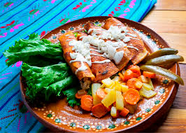

22.Queretaro

- Platillo: Enchiladas queretanas
- Ingredientes: Tortillas rellenas de papa y zanahoria, bañadas en salsa de chile guajillo, acompañadas de pollo y lechuga.
- Historia: Nacen como comida sencilla y económica para alimentar a los trabajadores del campo.
- Dato curioso: Se sirven con zanahoria y papa frita, a diferencia de otras enchiladas del país.